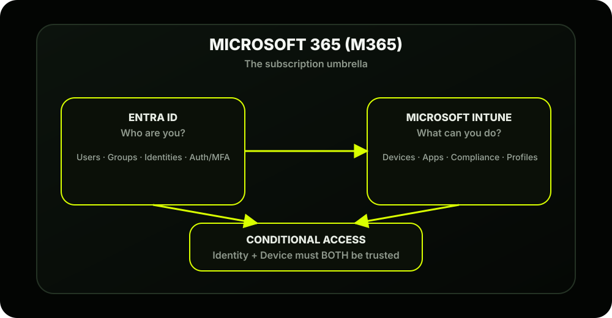
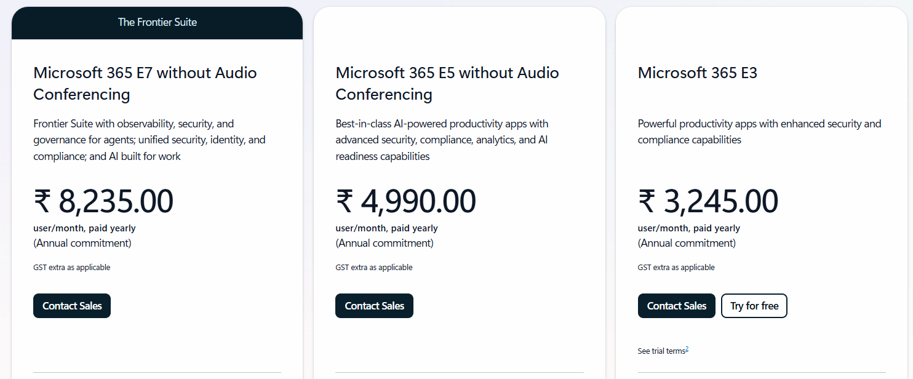
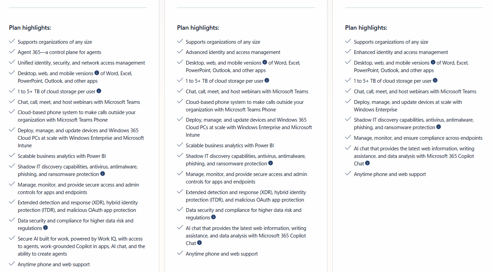
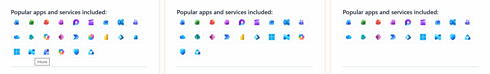
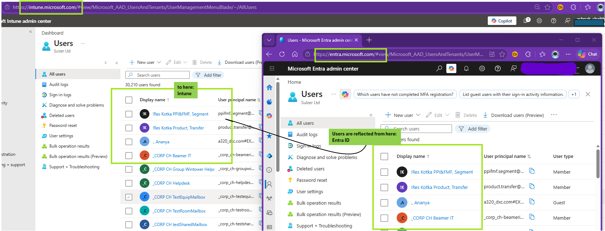
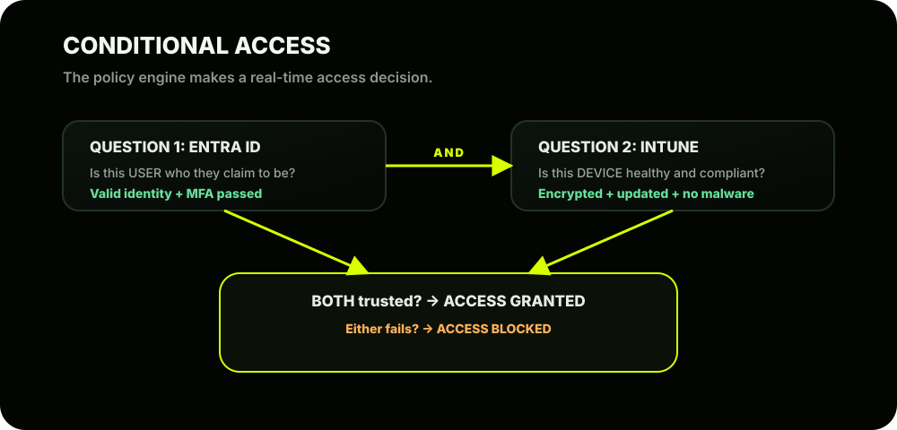
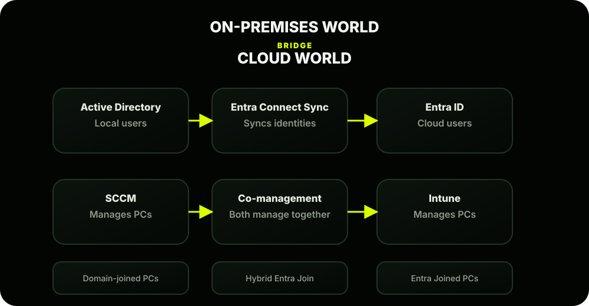

The Scene
Ashpak knows that walking into his manager's office saying "we need Intune" isn't enough. His manager, Riya, is going to ask tough questions:
So Ashpak spends the evening mapping out the Microsoft cloud ecosystem; understanding how all the pieces fit together before making his case.
The Microsoft Cloud Ecosystem: The Big Picture
Most people think Intune is just a standalone product. It's not. It's one piece of a larger connected ecosystem. Understanding how the pieces relate to each other is what separates a beginner from a true Intune professional.
Here's the ecosystem Ashpak drew on his whiteboard:

Let's Meet Each Player
1⃣ Microsoft 365 (M365): The Subscription Umbrella
Think of M365 as the Netflix subscription; it's what AshScript pays for, and it unlocks everything underneath it.
Depending on which M365 plan you buy, you get different tools included. For example:
| Plan | Includes Intune? | Includes Entra ID P1? | Includes Defender? |
|---|---|---|---|
| M365 Business Basic | × | × | × |
| M365 Business Premium | ✓ | ✓ | ✓ |
| M365 E3 | ✓ | ✓ | × |
| M365 E5 | ✓ | ✓ P2 | ✓ |



Full comparison: Open Modern Work Plan Comparison (PDF)
2⃣ Microsoft Entra ID: The Identity Engine
Previously called Azure Active Directory (Azure AD), Microsoft rebranded it to Entra ID in 2023. You'll still see both names used everywhere; they are the same thing.
Think of Entra ID as the bouncer at the door. Before any device or user can be managed by Intune, they need an identity in Entra ID.
Here's what Entra ID manages:
- Users; every person at AshScript (Ashpak, Riya, etc.)
- Groups; collections of users or devices (e.g., "All Sales Laptops")
- Authentication; logging in, MFA, password policies
- Tenant; AshScript's unique cloud space (ashscript.com)
AshScript example: When Ashpak creates a group called "Sales Team" in Entra ID, he can then go to Intune and say: "Deploy Microsoft Office to the Sales Team group." Intune uses Entra ID's group to know who to target.

3⃣ Microsoft Intune: The Device & App Manager
Once identity is established in Entra ID, Intune takes over to answer: "Now that we know WHO you are; what can your DEVICE do, and what apps can you access?"
Intune's three core jobs:
| Job | What It Means |
|---|---|
| Configure | Push settings, Wi-Fi, VPN, email to devices |
| Protect | Enforce compliance, encryption, block threats |
| Deploy | Install/remove apps silently |
4⃣ Conditional Access: The Smart Security Guard
This is where the magic of the ecosystem really shows. Conditional Access sits between Entra ID + Intune and acts as the policy engine that makes real-time access decisions.
It asks two questions every single time someone tries to access a company resource:

AshScript example: An employee tries to open SharePoint from a personal laptop that has never been enrolled in Intune. Even if they enter the correct password, Conditional Access says: "This device isn't managed or compliant; access denied." This is the heart of Zero Trust security; never trust, always verify.
5⃣ How AshScript's On-Prem World Connects to the Cloud
Right now, AshScript has:
- Active Directory (on-prem); manages users and computers locally
- SCCM; deploys software and patches to PCs
- GPOs; enforces settings on domain-joined machines
Here's how the two worlds connect:

These bridges are exactly what AshScript will use in Phase 3. You won't have to rebuild everything; you'll extend what you have.
The Mental Model to Remember
Quick Recap: What Ashpak Now Knows
| Piece | Role | Portal |
|---|---|---|
| M365 | The subscription that provides access to everything | admin.microsoft.com |
| Entra ID | Identity; users, groups, authentication | entra.microsoft.com |
| Intune | Device & app management | intune.microsoft.com |
| Conditional Access | Access decisions based on identity + device | entra.microsoft.com |
| Entra Connect | Syncs on-prem AD users to the cloud | Set up on a local server |